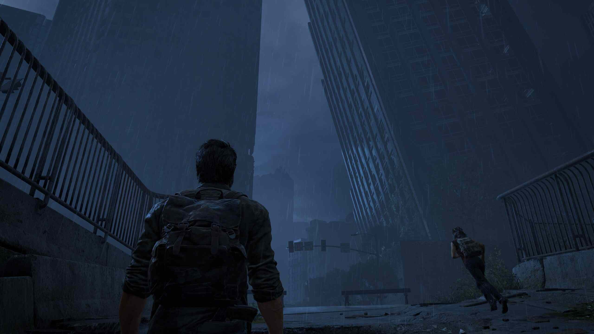
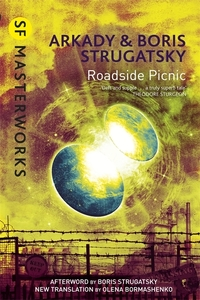

The Last of Us

The Last of Us is a beautiful post apocalyptic game, though it does have some ludonarrative dissonance. Despite that I highly recommend it.Roadside Picnic

One of my favorite books I have read this year is Roadside Picnic. It is written by Arkady and Boris Strugatsky and published in 1972 during the Soviet Union. I highly recommend this book.Stalker Directed by Andrey Tarkovsky
This is a really unique film, this is based on Roadside Picnic.
Sound
Credit for this audio goes to Zvonko Cosic for his cover of he was a good stalker for the video game S.T.A.L.K.E.R.